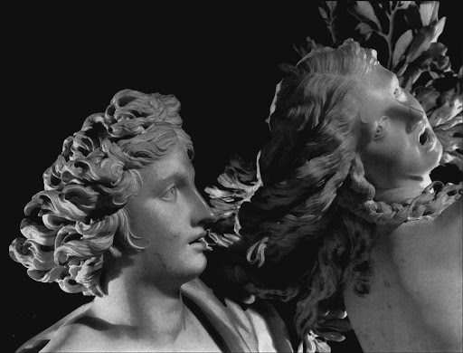

Il gruppo di Apollo e Dafne fu scolpito da Gian Lorenzo Bernini tra il 1622 e il 1625.
Il soggetto non era nuovo nella storia dell'arte ma gli scultori non lo avevano mai affrontato.
Bernini osò quanto sino ad allora era apparso impossibile: rappresentare nel marmo
un corpo umano che si trasforma in pianta.
Narra Ovidio, nelle sue Metamorfosi, che Apollo, travolto da una passione incontenibile,
inseguiva la ninfa Dafne; la fanciulla, che invece provava repulsione per lui, non voleva neppure
essere toccata e scappava. Durante la corsa, ella implorò il padre, il dio fluviale Peneo, di salvarla;
così, al tocco di Apollo venne trasformata in albero di alloro.
Nel capolavoro di Bernini, Apollo riesce a raggiungere, alla fine di una lunga corsa, la bella Dafne e
questa, sfiorata dalle dita del giovane, inizia la sua trasformazione in albero. Apollo ha il corpo di
un adolescente, con i muscoli in tensione; sbilanciato in avanti, compie una rotazione con il busto per afferrare Dafne.
Il mantello, che gli sta scivolando via, si gonfia nel vento. È confuso e ansimante. Dafne, invece, intuisce cosa sta accadendo
e urla, più per lo stupore che per il dolore: si inarca all'indietro, ruota il busto e allarga le braccia in alto.
Le sue mani e i capelli stanno prendendo la forma di rami e di foglie, le gambe stanno diventando tronco e i piedi radici.
Con Apollo e Dafne (e le altre sculture per Scipione Borghese) Bernini raggiunse la più alta e compiuta espressione della
rappresentazione del movimento. Egli riuscì a fissare un solo istante dell'azione, quello cruciale. Le sue figure, infatti,
non rappresentano più un fatto ma l'accadere di quel fatto, non più una realtà ma la trasformazione di quella realtà.
Apollo e Dafne sono colti nella corsa, nell'attimo esatto in cui la giovane si sta trasformando in albero: un attimo prima
era ancora donna, un attimo dopo non lo sarebbe stata più.
